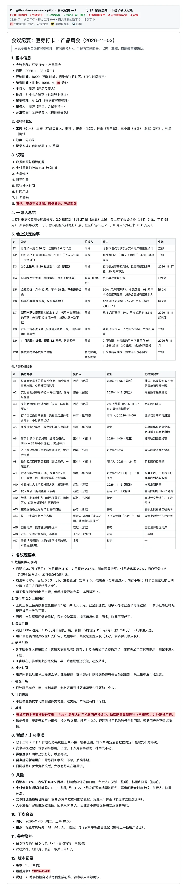
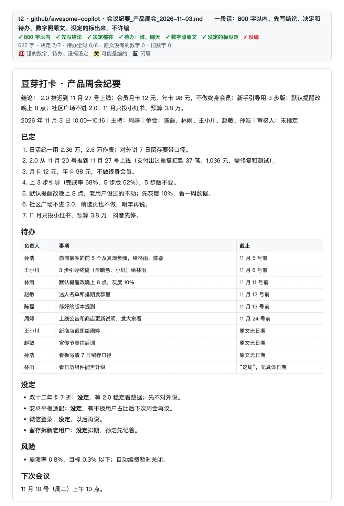

github/awesome-copilot: meeting summary test
Test of 2026-11-08. Installed from its README in a throwaway sandbox, then used by Claude Code (Claude Opus 5.5) to summarise the same made-up meeting record, an automatic transcript of a product team's weekly meeting of about 5,000 字, from two requests in the person's words. Whenever the build stopped short of a finished summary, it got the same reply. A separate tester session, with no tool loaded, checked the summary against 7 checks fixed before the runs: six scripted against an answer key written with the record, and one, anything the record does not support, read by the tester sentence by sentence. Everything in the record is made up. All results · The meeting record · The checklist · The answer key
Install: installed only the meeting-minutes skill (one file, SKILL.md) to ~/.claude/skills/meeting-minutes via `mkdir -p ~/.claude/skills && cp -r ~/src/skills/meeting-minutes ~/.claude/skills/meeting-minutes` (checked with `diff -r`) (repo commit 797337f33f73)
Why it was in the test (our note before the run): GitHub 官方合集里的会议纪要 skill：严格模板，每条待办必须有负责人和截止日期，缺的写 TBD；开写前「必须」先问最多 3 个问题，正好测中途停下来问、拿到「你按你推荐的来」以后怎么做。
One line
The request, word for word: 「帮我总结一下这个会议记录。」
2 of 7 checks passed. 2,826 字, in 会议纪要.md. Built in 1.6 minutes; it stopped to ask 1 time(s); how it ended: finished. Usage at API prices: $0.37 (1.6 times the run with no tool on this request).
| Check | Verdict | What decided it |
|---|---|---|
| At most 800 字 | fail | 2826 字（上限 800） |
| Opens with what was decided | fail | 开头 150 字里写到 0 条决定（无）；开头：结束时间 / 时长：10:16，约 16 分钟 主持人：周婷（产品负责人） 地点：3 楼小会议室（赵敏线上参加） 纪要整理：AI 助手（根据转写稿整理） 审核人：周婷（建议；会议主持人） 分发范围：全体参会人（待周婷确认） |
| All 7 decisions | pass | 7/7 条决定写到了 |
| All 6 tasks, each with its owner and due date | pass | 6/6 条待办负责人和截止日期都对 |
| Every figure as the record says it | fail | 134 个数字，2 个原文里没有（「16」：… 时长**：10:16，约 16 分钟 - **主持人**：…；「2026-11-08」：…稿） - **最后更新**：2026-11-08 - **说明**：AI 助…）；旧数字当成现在的 0 处 |
| The 3 open points marked not decided | fail | 1/3 件没定的事写到并标了没定；U1 没标没定：其他：安卓平板适配、微信登录、竞品改版；U3 没标没定：其他：安卓平板适配、微信登录、竞品改版 |
| Nothing the record does not support (the tester) | fail | 7 statement(s) the record does not support, listed below |
What the tester found the record does not support
A3 | 支付完整回归测试两轮（安卓、iOS 都要过） | 孙浩（测试） | 2.0 上线前（2026-11-27 前；具体日期待定） | 两轮回归通过
Nobody was given this task. 孙浩 only said '我这边支付至少要完整回归两轮…20 号确实来不及', as a reason for moving the date. The record also gives no due date.A4 | 打卡页切换日期崩溃：先看日历组件能否升级，不行就自己改 | 林雨（客户端） | 本周（约 2026-11-06）
林雨 said '我这周先看一下'. The record gives no date, so '约 2026-11-06' is made up.A5 | 压缩打卡分享图，减少老机型内存崩溃 | 林雨（客户端） | 待定
Nobody was given this. 林雨 only remarked '分享图确实大，压一压应该就好了，这个不难', so the owner is made up.A8 | 提供应用商店新版截图（交给周婷，一起更新） | 王小川（设计） | 随 A7，2026-11-24 前
王小川 said '截图…改公告的时候一起给你'. The record gives no deadline; 2026-11-24 is the due date of 周婷's own task, carried over.A14 | 拉一下安卓平板用户占比 | 负责人未明确（建议林雨，此事由林雨提出） | 下次周会前（2026-11-10）
Nobody was told to pull the data. 周婷 only said '等拿到平板用户的占比，我们下次周会再讨论', and gave no owner and no deadline. Both the suggested owner and the due date are the summary's own.重点：检查本周待办（A1、A4、A6）进度；讨论安卓平板是否适配（需带上平板用户占比）。
The record says nothing about checking these tasks at the next meeting. It only names the next meeting's time, and says the tablet question will be discussed then.开始时间：10:00（当地时间；记录未注明时区，UTC 时间待定）
'UTC 时间待定' is not in the record. The record just says 10:00–10:16, and no time zone was ever pending.
Where the tester doubted how the script read it
Some of these led to the script fixes listed in RESULTS.md; every verdict on this page comes from the fixed script.
- Opens with what was decided: The script took the 基本信息 list starting '开始时间：10:00（当地时间；记录未注明时区，UTC 时间待定）' as the first block because '开始时间' is not in its meta pattern. Skipping it would not change the verdict: the blocks that follow (参会情况, 议程) contain no decisions either; the first decisions appear only under '## 4. 一句话总结'.
- Every figure as the record says it: Partly misread: '20', '27', '13' come from dates written as '11-20', '11-27', '11-13', which are record dates (11 月 20/27/13 日) in another notation. The 'old figure as current' hit, '20 号来不及' in D3's reason column ('2.0 上线从 11-20 推迟到 11-27'), is given as the old date that was replaced, not as the current one. The remaining hits are real: '约 16 分钟' is worked out from 10:00–10:16, and '最后更新：2026-11-08' is a date the record does not give. So the verdict would stand even without the misreads.
- The 3 open points marked not decided: U1 and U3 are marked as not decided in '## 8. 暂缓 / 未决事项' ('等拿到平板用户占比，下次周会再讨论', '周婷还没想好，以后再说'). The script fails them because of unmarked mentions elsewhere: the agenda line '其他：安卓平板适配、微信登录、竞品改版', the background bullets under '**8. 其他**', and todo rows A14/A15. Under the checklist's 'wherever one appears' rule, that reading is literal, not a misread. Left for the reviewer.
The tester's notes
The summary is in Chinese and laid out as a full formal minutes template (12 sections, about 2,800 字), well beyond a summary. The decisions only begin at section 4, after 基本信息, 参会情况 and 议程. It adds admin lines the record does not have: '审核人：周婷（建议；会议主持人）', '分发范围：全体参会人（待周婷确认）', '议程文档、幻灯片、录音、相关工单：无', a 版本记录 section with '最后更新：2026-11-08', and an '状态：草稿' banner. The decision table lists 10 items, including items that are not meeting decisions: D4 '自动续费先关闭', an action 陈磊 had already taken, credited as '拍板人 陈磊（已执行）'; and D10 '投放素材里不放会员价格', an agreement between 林雨 and 赵敏. The todo table holds 17 rows, mixing the 6 real tasks with loose asks (S1–S10 in the key), several of them given owners or dates. Dates are mostly ISO style (2026-11-13, 11-27). Tables are valid Markdown, and names are spelt correctly. No small talk was kept.
The summary with the script's marks
The picture shown in our video. Red: a figure the record does not say, an old figure given as current, a task with the wrong owner or date, an open point not marked open. Yellow: lines the script flagged for the tester to read (candidates, not verdicts; the tester's list above is the verdict). Blue: small talk.

The summary as delivered (会议纪要.md)
# 会议纪要：豆芽打卡 · 产品周会（2026-11-03） > 本纪要根据自动转写稿整理（转写未校对）。闲聊内容已略去。状态：**草稿，待周婷审核确认**。 ## 1. 基本信息 - **会议名称**：豆芽打卡 · 产品周会 - **日期**：2026-11-03（周二） - **开始时间**：10:00（当地时间；记录未注明时区，UTC 时间待定） - **结束时间 / 时长**：10:16，约 16 分钟 - **主持人**：周婷（产品负责人） - **地点**：3 楼小会议室（赵敏线上参加） - **纪要整理**：AI 助手（根据转写稿整理） - **审核人**：周婷（建议；会议主持人） - **分发范围**：全体参会人（待周婷确认） ## 2. 参会情况 - **出席（6 人）**：周婷（产品负责人，主持）、陈磊（后端）、林雨（客户端）、王小川（设计）、赵敏（运营）、孙浩（测试） - **缺席**：无记录 - **记录方式**：自动转写 + AI 整理 ## 3. 议程 1. 数据回顾与崩溃问题 2. 支付重复扣款与 2.0 上线时间 3. 会员价格 4. 新手引导 5. 默认推送时间 6. 社区广场 7. 11 月投放 8. 其他：安卓平板适配、微信登录、竞品改版 ## 4. 一句话总结 因支付重复扣款需要彻底修复，**2.0 推迟到 11 月 27 日（周五）上线**；会上定了会员价格（月卡 12 元、年卡 98 元）、新手引导改为 3 步、默认提醒改到晚上 8 点、社区广场不进 2.0、11 月只投小红书（3.8 万元）。 ## 5. 会上决定的事 | # | 决定 | 拍板人 | 理由 | 生效 | |---|------|--------|------|------| | D1 | 日活统一用 **2.36 万**，之前的 2.6 万作废 | 周婷 | 旧版本埋点导致部分安卓用户被重复统计 | 立即 | | D2 | 对外说 7 日留存时必须带上口径（“7 天内任意一天回来”） | 周婷 | 和别家口径（“第 7 天回来”）不同，容易误导 | 立即 | | D3 | **2.0 上线从 11-20 推迟到 11-27（周五）** | 周婷 | 支付需加幂等和对账，且要完整回归两轮，20 号来不及 | 2026-11-27 | | D4 | 自动续费先关闭（临时措施，直到支付修复） | 陈磊（已执行） | 防止再次重复扣款 | 已生效 | | D5 | **会员定价：月卡 12 元，年卡 98 元，不做终身会员** | 周婷 | 300+ 用户调研认为 15 元偏贵，98 元年卡接受度明显高；终身会员没有续费收入 | 随 2.0 | | D6 | **新手引导用 3 步版，5 步版不要了** | 周婷 | A/B 测试完成率 68% 对 52%（各约 2,000 人） | 随 2.0 | | D7 | **新用户默认提醒改为晚上 8 点**；老用户自己设过的不动；先灰度 10% 看一周；推送文案本次不改 | 周婷 | 晚 8 点打开率 14%，早 9 点只有 8.5% | 2026-11-11 起灰度 | | D8 | **社区广场不进 2.0**（只读精选页也不做），明年看用户量再说 | 周婷 | 团队只有 6 人，无力承担审核、举报和运营 | 立即 | | D9 | **11 月只投小红书，预算 3.8 万元，抖音暂停** | 周婷 | 9 月数据：抖音来的用户 7 日留存 9%，小红书 26%；2.0 推迟，投放时间变短 | 2026 年 11 月 | | D10 | 投放素材里不放会员价格 | 林雨提出，赵敏同意 | 价格以后可能改，博主笔记改不回来 | 立即 | ## 6. 待办事项 | # | 要做的事 | 负责人 | 截止 | 怎样算完成 | |---|----------|--------|------|------------| | A1 | 整理崩溃最多的前 5 个问题，每个写清复现步骤，交给林雨和陈磊 | 孙浩（测试） | **2026-11-05（周四）** | 林雨、陈磊收到 5 个问题清单和复现步骤 | | A2 | 支付回调加幂等校验 + 每日对账，修好后提测 | 陈磊（后端） | **2026-11-13（周五）** | 修复版本提交测试 | | A3 | 支付完整回归测试两轮（安卓、iOS 都要过） | 孙浩（测试） | 2.0 上线前（2026-11-27 前；具体日期待定） | 两轮回归通过 | | A4 | 打卡页切换日期崩溃：先看日历组件能否升级，不行就自己改 | 林雨（客户端） | 本周（约 2026-11-06） | 连续切日期不再崩溃 | | A5 | 压缩打卡分享图，减少老机型内存崩溃 | 林雨（客户端） | 待定 | 分享图体积明显变小，老机型不再因此崩溃 | | A6 | 新手引导 3 步版终稿（含暗色模式、iPhone SE 等小屏适配），交给林雨 | 王小川（设计） | **2026-11-06（周五）** | 林雨收到完整终稿 | | A7 | 改上线公告和应用商店更新说明，发给大家看 | 周婷（产品） | **2026-11-24** | 公告和说明发给全员 | | A8 | 提供应用商店新版截图（交给周婷，一起更新） | 王小川（设计） | 随 A7，2026-11-24 前 | 新截图交给周婷 | | A9 | 默认提醒改为晚 8 点，灰度 10% 用户，观察一周，并盯安卓推送到达率 | 林雨（客户端） | **2026-11-11（周三）** 上线灰度 | 灰度上线，一周后有打开率和到达率数据 | | A10 | 小红书达人名单和排期方案，发到群里 | 赵敏（运营） | **2026-11-12（周四）** | 方案发到群里 | | A11 | 按 2.0 新日期调整宣传节奏 | 赵敏（运营） | 待定（2.0 上线前） | 宣传排期与 11-27 对齐 | | A12 | 给博主准备素材包（新界面截图、图标等），赵敏告诉王小川需要哪些 | 赵敏、王小川 | 待定 | 素材包交给博主，不含价格 | | A13 | 在数据看板上写明 7 日留存口径 | 孙浩（测试） | 待定 | 看板上能看到口径说明 | | A14 | 拉一下安卓平板用户占比 | 负责人未明确（建议林雨，此事由林雨提出） | 下次周会前（2026-11-10） | 周会上能给出占比数字 | | A15 | 回复用户：微信登录在考虑中 | 赵敏（运营） | 待定 | 已回复评论区用户 | | A16 | 社区广场设计稿存档，不要删 | 王小川（设计） | 待定 | 已存档 | | A17 | 看看「习惯熊」上周的日历视图改版，有想法发群里 | 全员 | 待定 | — | ## 7. 各议题要点 **1. 数据回顾与崩溃** - 日活 2.36 万（更正）；次日留存 41%，7 日留存 23.5%，和前两周持平；付费转化率 2.7%；商店评分 4.6（1,284 条评价），差评最多的是闪退。 - 崩溃率 0.8%，目标 0.3% 以下。主要原因：安卓 9 以下老机型（分享图过大、内存不够）；打卡页连续切换日期必崩（第三方日历组件太老）。 - 想把留存拆成新老用户看，但看板需要加字段，本周排不上。 **2. 支付与 2.0 上线时间** - 上周三晚上会员续费重复扣款 37 笔，共 1,036 元，已全部退款，赵敏和孙浩已逐个电话致歉；一条小红书吐槽笔记已被用户改为正面。 - 原因：支付渠道回调会重试，我方没做幂等。彻底修复约需一周多，陈磊不愿赶工。 **3. 会员价格** - 调研 300+ 老用户：15 元月卡偏贵，用户会和「习惯熊」（10 元/月）比；128 元年卡几乎没人选。 - 用户最想要的会员权益：去广告、数据导出，其次是主题皮肤（王小川会多做几套皮肤）。 **4. 新手引导** - 5 步版很多人在第四步（选每天提醒几次）放弃。3 步版去掉了选模板这步，在首页加了空状态提示，测试中没人卡住。 - 3 步版在小屏手机上按钮被挡一半，暗色配色还没做。动效从简。 **5. 推送时间** - 用户问卷也反映早上提醒太早。陈磊提醒：安卓部分厂商推送通道有每日条数限制，晚上集中发可能延迟。 **6. 社区广场** - 设计稿已完成一半，存档备用。赵敏表示开社区运营至少还要加一个人。 **7. 11 月投放** - 小红书主要找学习类和健身类博主，这类用户本来就有打卡习惯。 **8. 其他** - 安卓平板上界面被拉伸变形，iPad 也是放大的手机界面但投诉少；做适配需重新设计（含横屏）、并补测试平板。 - 微信登录：要走开放平台审核，接入约 2 周，赶不上 2.0；还涉及换手机的账号合并问题，部分用户也不想绑微信。 ## 8. 暂缓 / 未决事项 - **双十二年卡 7 折**：陈磊担心系统刚上线不稳、需要压测。等 2.0 稳定后看数据再定；赵敏先不对外说。 - **安卓平板适配**：等拿到平板用户占比，下次周会再讨论；林雨先不动。 - **微信登录**：周婷还没想好，以后再说。 - **留存拆分新老用户**：需陈磊加字段，不急，后续排期。 - **日历视图**：参考竞品改版，大家有想法在群里说。 ## 9. 风险 - **崩溃率 0.8%，远高于 0.3% 目标**：影响商店评分和口碑。负责人：孙浩（整理）、林雨和陈磊（修复）。 - **支付修复与测试时间紧**：11-13 提测，到 11-27 上线之间要完成两轮回归，再出问题会影响上线。负责人：陈磊、孙浩。 - **安卓推送通道每日限额**：晚 8 点集中推送可能被延迟。负责人：林雨（灰度时监控到达率）。 - **人手紧张**：客服由赵敏兼任，团队只有 6 人，因此暂不做社区等需要运营的功能。 ## 10. 下次会议 - **时间**：2026-11-10（周二）上午 10:00 - **重点**：检查本周待办（A1、A4、A6）进度；讨论安卓平板是否适配（需带上平板用户占比）。 ## 11. 参考资料 - 会议转写稿：`会议记录.txt`（自动转写，未校对） - 议程文档、幻灯片、录音、相关工单：无 ## 12. 版本记录 - **版本**：1.0（草稿） - **最后更新**：2026-11-08 - **说明**：AI 助手根据自动转写稿生成初稿，待审核人周婷确认。
Where it stopped, and got the reply 「我不懂这些，你按你推荐的来，继续做。」
这个工具是一个叫 meeting-minutes 的会议纪要技能。它规定：动手写之前，如果缺少关键信息，必须先问清楚。您的会议记录里已经有会议名称、日期、时间、主持人和完整的转写稿，只缺一项，所以我需要先问您一个问题： **这份会议纪要由谁来审核或确认？** 比如主持人周婷，或者别的人。如果暂时没有人，回答"没有"也可以，我会在纪要里标为"待定（TBD）"。 您回答后，我会按这个工具的格式写出纪要，放到 ~/work/output/。
One paragraph
The request, word for word: 「帮我把这个会议记录整理成一份总结，发给没来开会的同事看。全文 800 字以内。第一段先写结论：这次会最后定了什么。然后列出所有拍板的决定，再列出所有待办，每一条写清楚谁负责、哪天之前做完。数字一律照原文写，不要改，也不要自己换算。讨论了但没定下来的事单独列出来，标明“没定”，不能写成已经定了。原文里没有的东西一个字都别编，包括负责人和截止日期。」
6 of 7 checks passed. 625 字, in 会议纪要_产品周会_2026-11-03.md. Built in 1.4 minutes; it stopped to ask 1 time(s); how it ended: finished. Usage at API prices: $0.38 (1.4 times the run with no tool on this request).
| Check | Verdict | What decided it |
|---|---|---|
| At most 800 字 | pass | 625 字（上限 800） |
| Opens with what was decided | pass | 开头 150 字里写到 7 条决定（D1、D2、D3、D4、D5、D6、D7）；开头：结论： 2.0 推迟到 11 月 27 号上线；会员月卡 12 元、年卡 98 元，不做终身会员；新手引导用 3 步版；默认提醒改晚上 8 点；社区广场不进 2.0；11 月只投小红书，预算 3.8 万。 |
| All 7 decisions | pass | 7/7 条决定写到了 |
| All 6 tasks, each with its owner and due date | pass | 6/6 条待办负责人和截止日期都对 |
| Every figure as the record says it | pass | 51 个数字，0 个原文里没有；旧数字当成现在的 0 处 |
| The 3 open points marked not decided | pass | 3/3 件没定的事写到并标了没定 |
| Nothing the record does not support (the tester) | fail | 1 statement(s) the record does not support, listed below |
What the tester found the record does not support
审核人：未指定
The record never mentions a reviewer (审核人) for the meeting or the minutes; this field is template content that is not in the source. It is minor, but the user said nothing absent from the record may be added.
The tester's notes
Clean Markdown with a correctly formed table; names are spelt correctly. Owners volunteered the four undated extra to-dos in the meeting, and their due dates are honestly marked 「原文无日期」 or 「“这周”，无具体日期」, so they are not invented. Dates are written 11 月 X 号 rather than 日; this matches the record. The only issue: the header line 「审核人：未指定」 adds a role the record never mentions.
The summary with the script's marks
The picture shown in our video. Red: a figure the record does not say, an old figure given as current, a task with the wrong owner or date, an open point not marked open. Yellow: lines the script flagged for the tester to read (candidates, not verdicts; the tester's list above is the verdict). Blue: small talk.

The summary as delivered (会议纪要_产品周会_2026-11-03.md)
# 豆芽打卡 · 产品周会纪要 **结论：** 2.0 推迟到 11 月 27 号上线；会员月卡 12 元、年卡 98 元，不做终身会员；新手引导用 3 步版；默认提醒改晚上 8 点；社区广场不进 2.0；11 月只投小红书，预算 3.8 万。 2026 年 11 月 3 日 10:00–10:16｜主持：周婷｜参会：陈磊、林雨、王小川、赵敏、孙浩｜审核人：未指定 ## 已定 1. 日活统一用 2.36 万，2.6 万作废；对外讲 7 日留存要带口径。 2. 2.0 从 11 月 20 号推到 11 月 27 号上线（支付出过重复扣款 37 笔、1,036 元，需修复和测试）。 3. 月卡 12 元，年卡 98 元，不做终身会员。 4. 上 3 步引导（完成率 68%，5 步版 52%），5 步版不要。 5. 默认提醒改晚上 8 点，老用户设过的不动；先灰度 10%，看一周数据。 6. 社区广场不进 2.0，精选页也不做，明年再说。 7. 11 月只投小红书，预算 3.8 万，抖音先停。 ## 待办 | 负责人 | 事项 | 截止 | |---|---|---| | 孙浩 | 崩溃最多的前 5 个及复现步骤，给林雨、陈磊 | 11 月 5 号前 | | 王小川 | 3 步引导终稿（含暗色、小屏）给林雨 | 11 月 6 号前 | | 林雨 | 默认提醒改晚上 8 点，灰度 10% | 11 月 11 号前 | | 赵敏 | 达人名单和排期发群里 | 11 月 12 号前 | | 陈磊 | 修好的版本提测 | 11 月 13 号前 | | 周婷 | 上线公告和商店更新说明，发大家看 | 11 月 24 号前 | | 王小川 | 新商店截图给周婷 | 原文无日期 | | 赵敏 | 宣传节奏往后调 | 原文无日期 | | 孙浩 | 看板写清 7 日留存口径 | 原文无日期 | | 林雨 | 看日历组件能否升级 | “这周”，无具体日期 | ## 没定 - 双十二年卡 7 折：**没定**，等 2.0 稳定看数据；先不对外说。 - 安卓平板适配：**没定**，有平板用户占比后下次周会再议。 - 微信登录：**没定**，以后再说。 - 留存拆新老用户：**没定**排期，孙浩先记着。 ## 风险 - 崩溃率 0.8%，目标 0.3% 以下；自动续费暂时关闭。 ## 下次会议 11 月 10 号（周二）上午 10 点。
Where it stopped, and got the reply 「我不懂这些，你按你推荐的来，继续做。」
我用的是装好的 `meeting-minutes` 工具（在 `~/.claude/skills/meeting-minutes`）。它规定：写纪要之前，如果缺少某些关键信息，必须先问清楚。 会议记录里已经有会议名称、日期、时间、主持人和完整的会议转写，不用再问。只有一项它要求、但记录里没有： **这份纪要由谁审核或批准？**（工具原文："Who should be assigned as the reviewer or approver for the minutes?"） 你可以给一个名字，比如会议主持人周婷，也可以说"没有"。没有的话我就在文档里写"未指定"。审核人只会写进文档，我不会把文档发给任何人。 你回答后我就开始写，最后放到 `~/work/output/`。